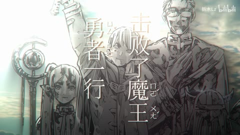
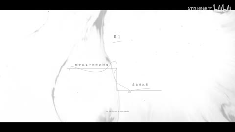
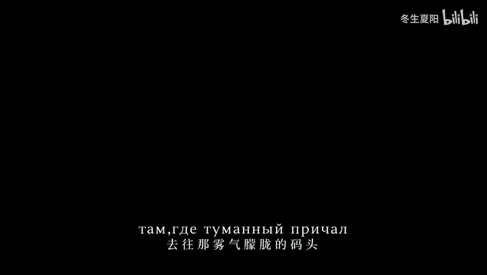
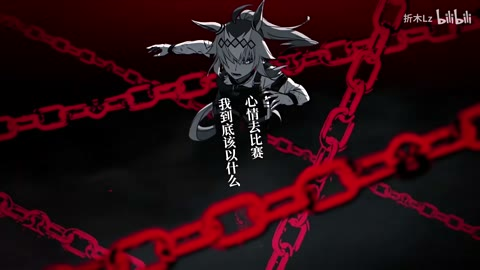
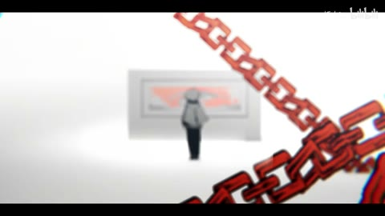

H15 / 16—24秒
【芙莉莲/静止系MAD】想不想看花海盛开
白底人物远景、小幅竖字、近景人物与蓝色叶片层叠；24秒大号竖排字压在多人漫画前。
迁移提问：前景、中景、背景分别是什么？如果镜头移动，原图未画出的部分由谁补齐？
手法专题 / 规则、用途与取舍
将平面关系变成有前后层次的观看空间；小幅运动可以放大情绪。
静止画MAD、回忆、图像故事、海报动态化、人物介绍。
所有层同速或反向乱动；人物像纸板；补洞不完整；视角变化超出原画信息。
①分前中后景；②补被遮挡区域；③选轻微镜头路径；④近层位移略大；⑤保留遮挡与光源关系；⑥逐帧检查边缘。
已有分层后容易；抠图、补画与可信空间需逐镜处理。
基础机制已做13项原创演示，不等于本页所有复杂组合均已成片验证。
原机制演示 →
H15 / 16—24秒
白底人物远景、小幅竖字、近景人物与蓝色叶片层叠；24秒大号竖排字压在多人漫画前。
迁移提问：前景、中景、背景分别是什么？如果镜头移动，原图未画出的部分由谁补齐？

H41 / 9—24秒
9秒模糊漫画，12秒两人车厢；15/18秒留白中央小字、编号及纤细装饰线，21秒侧脸、24秒竖幅人物。
迁移提问：前景、中景、背景分别是什么？如果镜头移动，原图未画出的部分由谁补齐？

H42 / 0—13.6秒
人物绿眼、紫发与冷背景，前景脸和城市/屋内背景有景深差；双行外文/中文小字幕。
迁移提问：前景、中景、背景分别是什么？如果镜头移动，原图未画出的部分由谁补齐？

H14 / 48—48秒
人物在红色链条网络中，链条分前后层，旁边细竖排字
迁移提问：前景、中景、背景分别是什么？如果镜头移动，原图未画出的部分由谁补齐？

H06 / 12—28秒
漫画人物抠像置于粉、红、白色块；链条前景、棋盘地面、黄眼和暗部轮廓
迁移提问：前景、中景、背景分别是什么？如果镜头移动，原图未画出的部分由谁补齐？
做6秒镜头，限制镜头位移小于画幅5%；先看是否更有空间，再决定是否加粒子。
交付时保留基础版与加效果版，并写“增加了什么意义、损失了什么清晰度”。
使用观察与复盘表 →